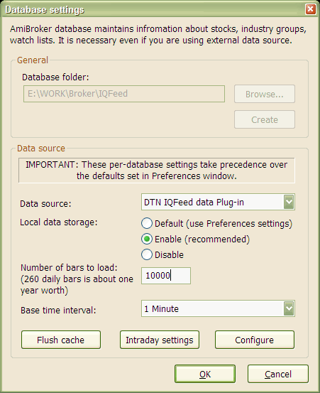

Note: the most recent version of this document can be found at: http://www.amibroker.com/iqfeed.html. Please check this page for updates.
Requirements
If you don't have IQFeed Connection Manager already installed, you have to install it first. You can download the IQFeed client setup from here (version 4.2.0.7).
http://www.amibroker.com/video/IQFeed.html
To use AmiBroker with IQFeed, you will need to perform a one-time setup described below:

From now on, your AmiBroker reads quotes directly from the IQFeed.
To learn how to use AmiBroker in real-time mode, read this tutorial article.